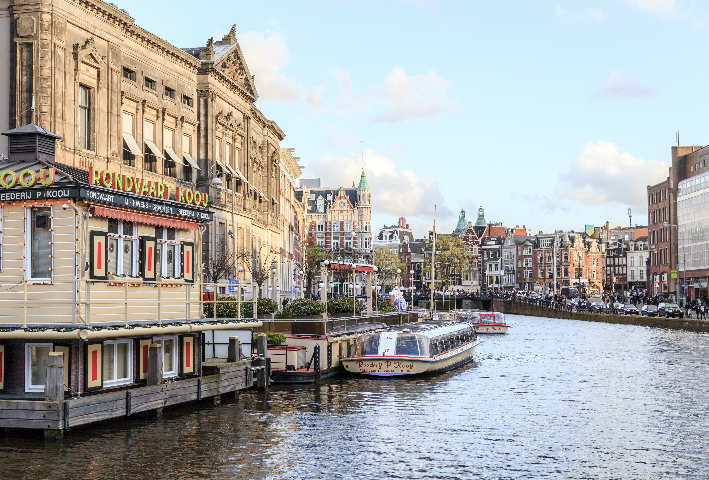
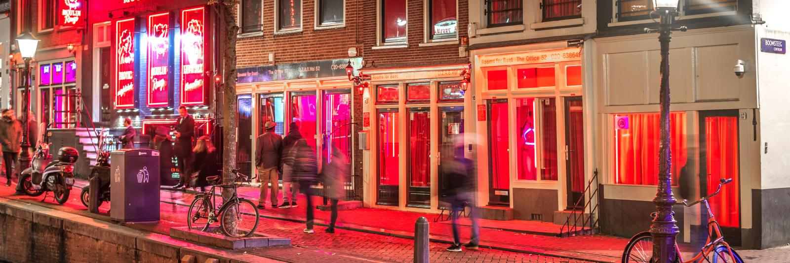

Ámsterdam
Historia
Ámsterdam(en neerlandés, Amsterdam) es la capital oficial del Reino de los Países Bajos. La ciudad está situada entre la bahía del IJ, al norte, y a las orillas del río Amstel, al sureste. Fundada en el siglo xii como un pequeño pueblo pesquero, en la actualidad es la ciudad más grande del país y un gran centro financiero y cultural de proyección internacional. Tiene una población de unos 810 000 habitantes y en su área metropolitana residen aproximadamente 1,5 millones. Cabe destacar que Ámsterdam forma parte de la gran conurbación neerlandesa llamada Randstad (junto con las ciudades de La Haya, Róterdam y Utrecht), que cuenta con más de 6,5 millones de habitantes. Este núcleo es una de las conurbaciones más grandes de Europa. El centro histórico de la ciudad fue construido en gran parte en el siglo xvii y es hoy en día uno de los centros históricos más grandes de Europa. En aquella época se construyeron una serie de canales semicirculares alrededor del casco antiguo ya existente de la ciudad. Después se edificaron las nuevas calles que ahora habían sido creadas con casas y almacenes en un estilo típico neerlandés que es una de las imágenes más famosas de Ámsterdam y del país. Al igual que otras ciudades de Europa septentrional con abundancia de agua, como Brujas, Hamburgo y Estocolmo, es conocida coloquialmente como la «Venecia del norte». Aunque durante casi toda su historia (excepto entre 1808-1810) ha sido la capital oficial de los Países Bajos, nunca ha sido la sede de la justicia, el gobierno o el parlamento neerlandés, ya que todos estos órganos se encuentran en la ciudad de La Haya, que por tanto es la principal ciudad del país con respecto a política y justicia. Ámsterdam tampoco es la capital de la provincia de Holanda Septentrional, que siempre ha sido Haarlem.
Pocos años antes del comienzo de la Primera Guerra Mundial, la ciudad comenzó a expandirse, construyendo en las afueras nuevos barrios residenciales. Durante la Primera Guerra Mundial, Países Bajos tomó una posición neutral, pero aun así la población sufrió mucha hambre y una grave falta de suministro de gas. Alemania invadió los Países Bajos el 10 de mayo de 1940, tomando el control del país después de cinco días de lucha. Los alemanes instalaron un gobierno civil nazi en Ámsterdam, que se encargaba de la persecución de los judíos. También los neerlandeses que ayudaban y protegían a las víctimas, fueron perseguidos. Más de 100 000 judíos fueron deportados a campos de concentración. Entre ellos se encontraba Ana Frank. Solo 5000 judíos sobrevivieron a la guerra. Durante los últimos meses de la guerra, en 1945, la comunicación con el resto del país se interrumpió y la población sufrió una grave escasez de comida y energía. Muchos habitantes de Ámsterdam tuvieron que ir al campo en busca de algún tipo de alimentación. Para sobrevivir, se consumieron perros, gatos y bulbos de flores. Muchos árboles de Ámsterdam se usaron para obtener energía, igual que la madera de las casas de quienes habían desaparecido.

El escudo de Ámsterdam consta de tres cruces denominadas las «cruces de San Andrés» en honor al apóstol Andrés que fue martirizado en una cruz con forma de "X". En el siglo xvi se añadieron los leones. Hay historiadores que creen que las cruces representan los tres peligros que más afectaron a Ámsterdam: inundación, incendio y la peste negra. El lema oficial de la ciudad es: «Heldhaftig, Vastberaden, Barmhartig» ('Heroica, resuelta y misericordiosa'). Estas tres palabras provienen de la denominación oficial concedida por la reina Guillermina de los Países Bajos en 1947, en honor al coraje de la ciudad durante la Segunda Guerra Mundial. La Corona Imperial de Austria fue obsequiada a la ciudad en el año 1489 por Maximiliano I de Habsburgo para así agradecer los servicios y préstamos que Ámsterdam le había ofrecido. La corona significaba protección imperial y les servía a los comerciantes neerlandeses cuando se movían por el extranjero. La bandera de Ámsterdam consta de tres franjas horizontales, rojas la superior e inferior, la central es negra con tres cruces blancas inclinadas. Está basada directamente en el escudo.
Turismo
En Ámsterdam se encuentran muchos museos de fama internacional, como el Rijksmuseum, el museo de arte moderno Stedelijk Museum y el Museum het Rembrandthuis o 'Museo de la Casa de Rembrandt', que fue el hogar y taller de Rembrandt, y exhibe una interesante colección de aguafuertes de su autoría; el Museo van Gogh, que posee la mayor colección de pinturas de Van Gogh en el mundo; el museo de Cera Madame Tussaud, o el Museo del cine, también conocido como Filmmuseum. También la Casa de Ana Frank, convertida en museo, es un destino turístico muy popular, así como el Museo Amstelkring en cuya buhardilla se encuentra una iglesia católica clandestina del siglo xvii. Promoción turística «I am sterdam», frente al Rijksmuseum El Hortus Botanicus, fundado a comienzos de la década de 1660, es uno de los más antiguos jardines botánicos del mundo, con muchas antiguas y raras especies, entre las cuales está la planta de café de la cual salió el esqueje que sirvió como base de las plantaciones en América Central y América del Sur. También en esta ciudad se encuentra la conocida fábrica de cerveza Heineken, que también tiene su museo. También la prestigiosa sala de conciertos Concertgebouw es sede de la igualmente famosa orquesta sinfónica Orquesta Real del Concertgebouw, que dio su primer concierto el 3 de noviembre de 1888. Entre los eventos periódicos celebrados en la ciudad están la Maratón de Ámsterdam, el Festival de Cine del Mundo de Ámsterdam, el Koninginnedag y el Festival Internacional de Cine Documental de Ámsterdam.
Cultura
La cultura de Ámsterdam es muy diversa y tiene una escena muy animada. Esto se debe a su renovado interés en su propia cultura. Ámsterdam es una ciudad muy musical, donde todo tipo de artistas callejeros interpretan en salas de conciertos. También hay muchos parques donde se organizan espectáculos durante el día. En cuanto a la moda, la ciudad ofrece estilos muy diversos y singulares, podrás encontrar incluso los zapatos más inusuales que hayas visto nunca. También están de moda las chaquetas a cuadros o el color naranja, en relación al color nacional del país. Ámsterdam también cuenta con teatros, museos, salas de exposiciones, cines, artesanía e incluso en sus bibliotecas se pueden encontrar archivos muy interesantes.
El arte es una pieza muy importante en la composición cultural de esta ciudad, de ahí que los museos sean una de las atracciones turísticas más importantes. Los mejores museos de Ámsterdam son: Rijksmuseum Ámsterdam Van Gogh Museum The Anne Frank House Stedelijk Museum CS (arte moderno) The Rembrandt House Museum
Una vez al año, a mediados de Abril durante la semana de los museos, un gran número de museos ofrecen acceso gratuito o grandes descuentos en las entradas. Una de las actividades más divertidas tiene lugar a principios de noviembre, con DJ y bebidas! Cerca de casi 40 museos en Ámsterdam abren hasta altas horas de la madrugada para poder contemplar las colecciones en una atmósfera poco convencional.
Rosse Buurt
Entre las zonas más populares de la ciudad se encuentra el barrio rojo (en neerlandés Rosse buurt, o Red Light District en inglés), por el color de las luces que iluminan los locales donde se exhiben, en una especie de escaparates, las prostitutas que trabajan en esta zona de la ciudad. La prostitución en Países Bajos está completamente legalizada en zonas designadas para ella, donde las prostitutas tienen derecho a seguridad social y paro. La Zona roja, denominada coloquialmente «De Wallen» en referencia a los muelles (wall) de dos canales que lo cruzan, está ubicado en pleno centro de Ámsterdam, entre las calles Warmoesstraat, Zeedijk, Nieuwmarkt, Kloveniersburgwal y Damstraat. Otras ciudades, como Utrecht, La Haya, Groninga y Haarlem, tienen también sus propios barrios rojos.
Coffe Shops

En el barrio rojo, al igual que en otras partes de la ciudad, se encuentran los llamados coffee shops que venden pequeñas cantidades de marihuana, en general de muy alta calidad ecológica, esto se tolera mientras sean cantidades pequeñas (hasta 5 gramos diarios por persona), y a condición de que el comprador sea mayor de edad (aunque algunos coffee shops no permiten la entrada a menores de 21 años). Esta política se denomina gedoogbeleid o «política de tolerancia». Asimismo a los vendedores de marihuana de los coffee shops no se les permite tener más de medio kilo de marihuana en el local. Los coffee shops son uno de los principales atractivos de Ámsterdam sobre todo entre los turistas jóvenes y gracias a estos, el Estado obtiene buenos ingresos a través de los impuestos que gravan estos productos. Los coffee shops son, además de un sitio para consumir marihuana, un lugar de encuentro, ya que son muchos los que suelen acudir a estos cafés a lo largo del día.